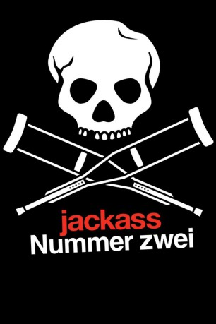
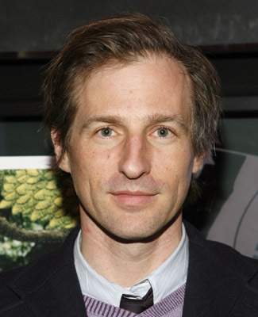
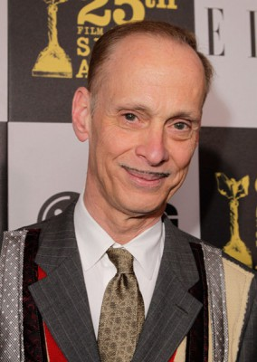

#4545 Jackass: Nummer Zwei
Alternativ: Jackass Number Two
 
 IMDB-Wertung: 7.1 / 10
IMDB-Wertung: 7.1 / 10  Metascore: 0
Metascore: 0 
Erneut trommelt Johnny Knoxville seine durchgeknallten Kumpels zusammen, um neue Widerlichkeiten und halsbrecherische Action auf Zelluloid zu bannen. Neben den altbewährten Stunts mit dem Einkaufswagen, bietet der Film einen Stierkampf mit blindem Matador, ein schmerzhaftes Zusammentreffen zwischen einem Krebs und einer Zunge sowie das Ziehen eines Zahnes mit der naturgemäß schmerzarmen Nylonfaden-Methode. Das oftmals mit Blessuren und anderen unschönen Nebenerscheinungen. Man kann auch bei diesem Streifen wirklich nur wiederholen: "Don't try this at home!".
Jahr: 2006
Dauer: 89 Minuten
FSK: 18
Land: USA Studio: Paramount PicturesTonspuren:
Untertitel:
Auflösung: SD (640x352) Größe: 699 MB
Genre: Dokumentation, Action, Komödie
Regisseur: Jeff Tremaine
Drehbuch: Claude Clément
Soundtrack:
Darsteller:
 Johnny Knoxville als Himself
Johnny Knoxville als Himself- Bam Margera als Himself
 Steve-O als Himself
Steve-O als Himself Chris Pontius als Himself
Chris Pontius als Himself- Ryan Dunn als Himself
- Jason 'Wee Man' Acuña als Himself
- Preston Lacy als Himself
- Dave England als Himself
- Ehren McGhehey als Himself
- Phil Margera als Himself
- Brandon DiCamillo als Himself
 Tony Hawk als Himself
Tony Hawk als Himself- Mark Zupan als Himself
- Jeff Tremaine als Himself
-  Spike Jonze als Himself
 Stephanie Hodge als Herself
Stephanie Hodge als Herself- Jim Karol als Himself
- Jordan Houston als Himself
- Paul Beauregard als Himself
 Willie Garson als Himself
Willie Garson als Himself Jay Chandrasekhar als Himself
Jay Chandrasekhar als Himself-  John Waters als Himself
 Luke Wilson als Himself
Luke Wilson als Himself Mike Judge als Himself
Mike Judge als Himself Rip Taylor als Himself
Rip Taylor als Himself- Vincent Margera als Himself , scenes deleted
- Lisa Arturo als Dancer , uncredited
- Katherine Bailess als Dancer , uncredited
- Lance Bangs als Himself , uncredited
- Chad Doreck als Dancer , uncredited
- Scott Hislop als Dancer , uncredited
- Jennifer D. Johnson als Dancer , uncredited
- Jason Landau als Dancer , uncredited
 Rebecca Lin als Western Dancer , uncredited
Rebecca Lin als Western Dancer , uncredited- Joel Manning als Dancer , uncredited
 Anthony Marciona als Dancer , uncredited
Anthony Marciona als Dancer , uncredited- Marcy McCusker als Dancer , uncredited
- Paige Peterson als Busby Dancer , uncredited
 Tracy Phillips als Dancer , uncredited
Tracy Phillips als Dancer , uncredited- Matthew Shaffer als Dancer , uncredited
 Kevin Alexander Stea als Dancer , uncredited
Kevin Alexander Stea als Dancer , uncredited- Dollar Tan als Chip'n'Dale Dancer , uncredited
- Three 6 Mafia als Themselves , uncredited
- John Todd als Dancer , uncredited
- April Margera als Herself
- Jess Margera als Himself
- Mat Hoffman als Himself
- Brandon Novak als Himself
- Loomis Fall als Himself
- Dimitry Elyashkevich als Himself
Datei: X:\FSK18-Collections\Jackass\Jackass Nummer Zwei (2006, FSK18, 640x352).avi seit 11.10.2016
Festplatte: FSK18
 Es gibt insgesamt 8 Filme in der Gruppe 'FSK18-Collections\Jackass'
Es gibt insgesamt 8 Filme in der Gruppe 'FSK18-Collections\Jackass'